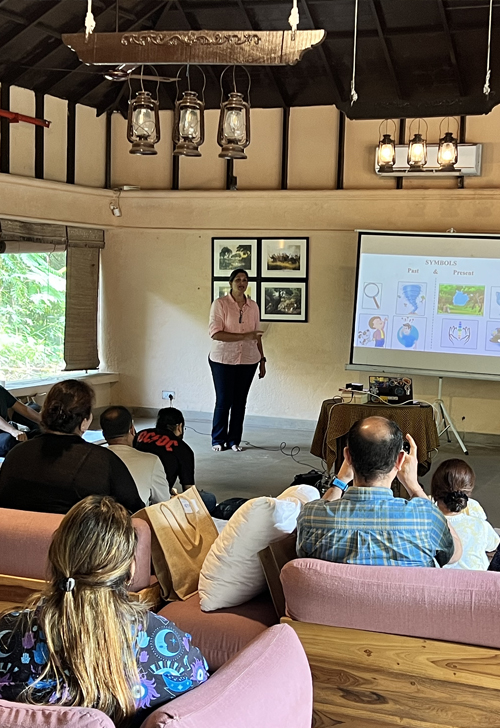
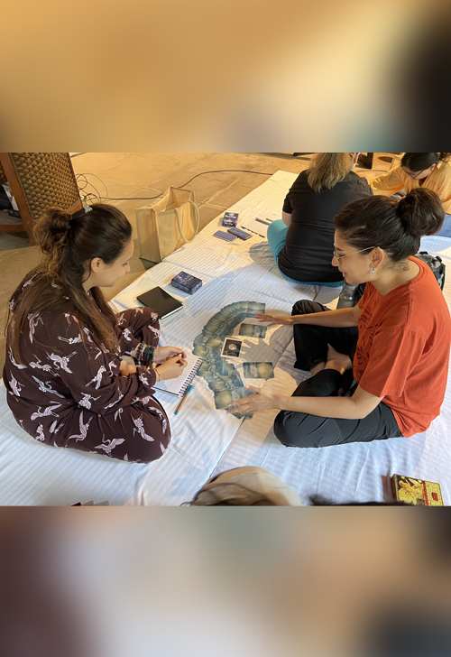
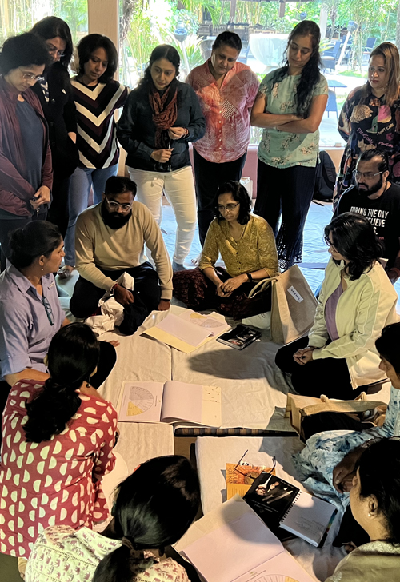
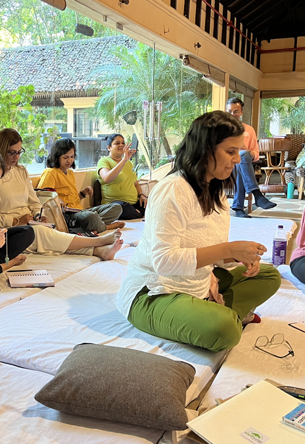

This 5-day workshop has been designed to help each participant return to the naturalness of the craft of exercising our psychic abilities and mediumship.




This 5-day workshop has been designed to help each participant return to the naturalness of the craft of exercising our psychic abilities and mediumship. Working from a psychic space is one of the most natural states of being for each one of us. We will kickstart this 5-day journey, by establishing the building blocks of being truly clairsentient. We will then explore multiple tools to enhance our ability to receive and express information from a psychic space. By day 3, we will use this backdrop to transition into 'mediumship', which is our ability to connect with the spirit world.
By bringing our awareness to the potential of these tools, we are able to help individuals while working with their telepathic animal communication cases, enhancing self-work, and applying these in conjunction with any parallel modality the individual might already be practicing, for example - Pranic healing, Reiki etc.
Enumerated below is a day-wise overview of the workshop, logistics and associated costs -
SoulCraft Highlights:
- Establish the tenets of telepathy & psychic abilities.
- Gain an insight into and practice the building blocks of being clairsentient.
- Explore psychic tools like aura-graphs, psychometry (reading objects), oracle cards, hand imprints, and symbols to tune into a partner & channel information from a neutral space of surrender.
- Explore the concept of 'soul consciousness' based on the work of Dr. David Hawkins. Use this as the backdrop to expand our own soul awareness and raise our individual level of consciousness.
- Insights into the concept of ‘mediumship’ (communicating with souls from the spirit world) & work hands-on in partnered settings.
- Sessions on parallel healing modalities eg: Pendulum dowsing and EFT.
- Meditations to help connect with 'source energy' and our 'spirit team'.
- Delve into a soul's journey (from birth to death and life-between-lives).
- Nature trail and jungle safari.